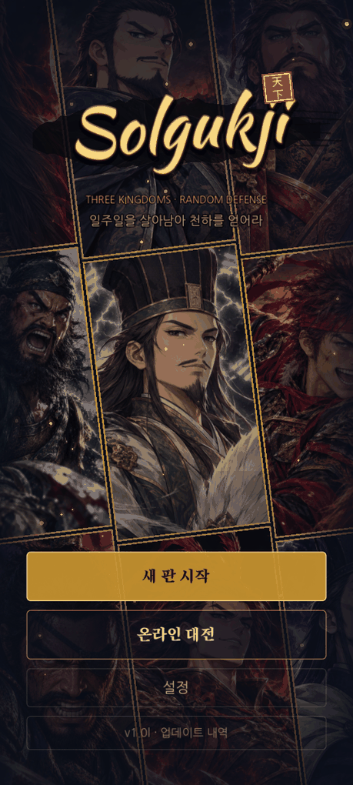
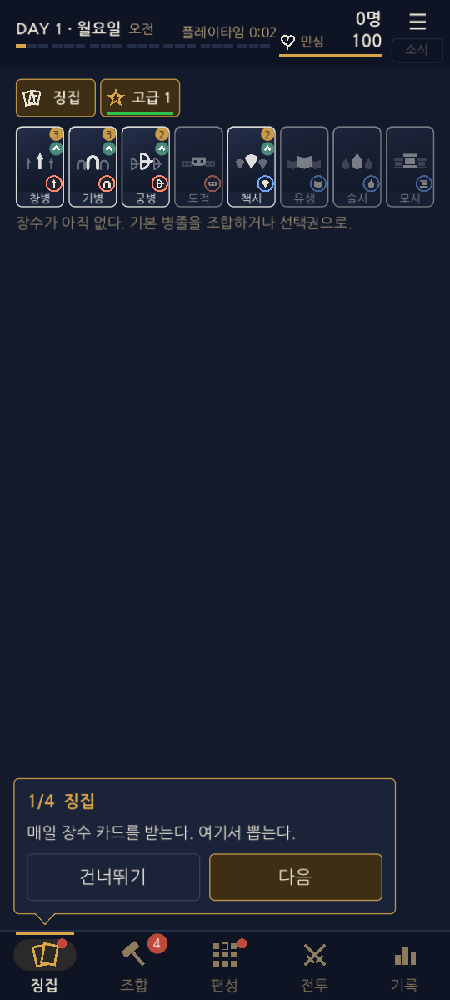
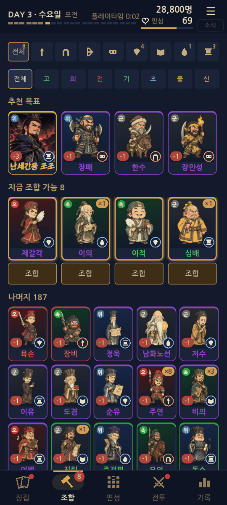
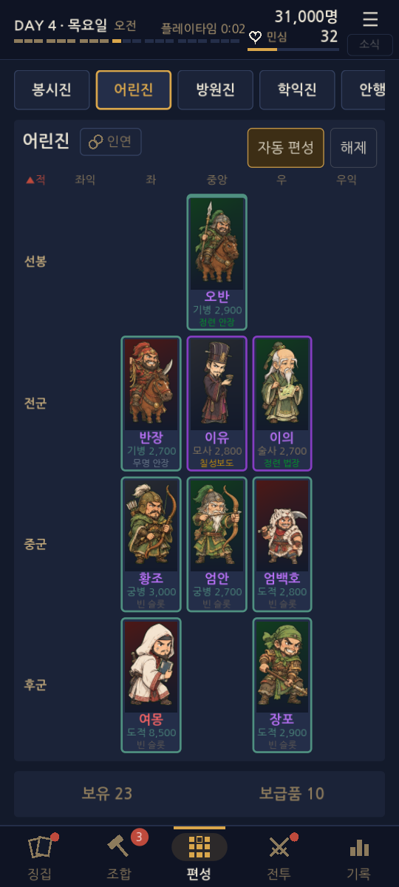
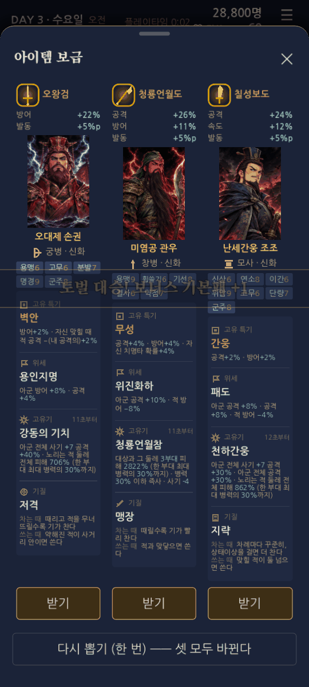
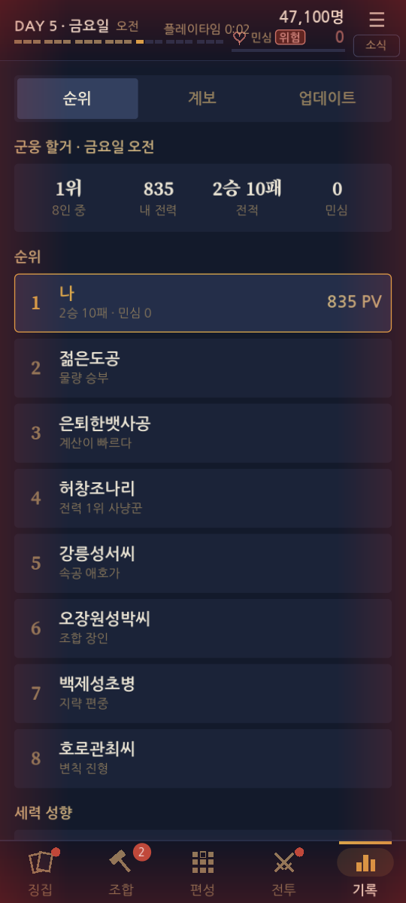
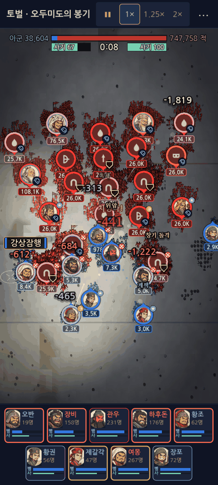
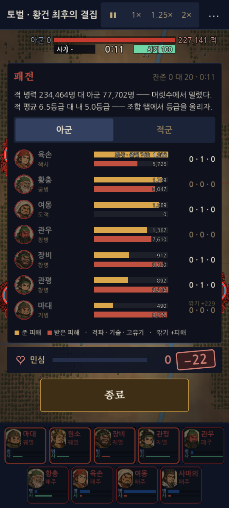
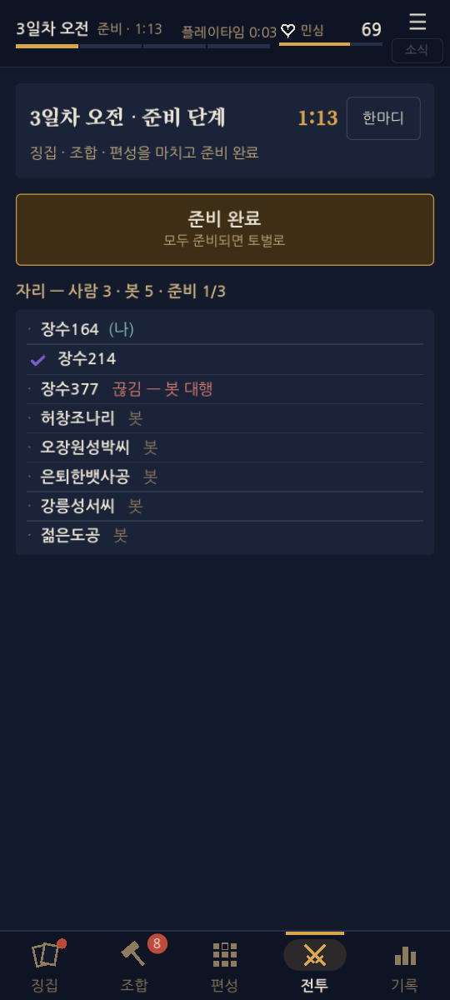
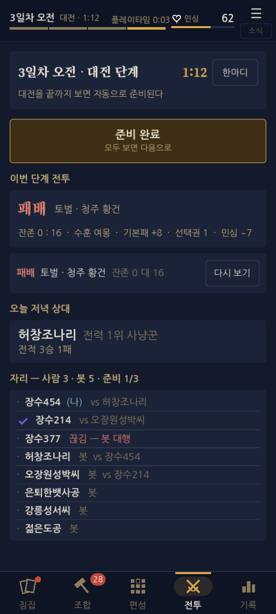

솔국지 현황 보고 — 2026-11-11 (하루 마감)
다른 AI 모델 · 다른 작업자에게 넘기는 문서. 이 문서 하나로 게임의 흐름 · 시스템 · 오늘까지의 변화 · 약점을 파악할 수 있게 썼다. 이전 문서: docs/현황_1105.html(전투 구조 자세히) · docs/현황_1106.html(타입2 탑뷰 전장). 기준 빌드 APK 1.0l (code 13) · 브랜치 main 커밋 c391038. 스크린샷은 540×1200(휴대폰 세로)에서 직접 찍은 것이다.
- 한눈에
- 한 판의 흐름 · 화면
- 핵심 시스템 (카드 · 조합 · 편성 · 전투 · 고유기 · 인연 · 민심 · 보급)
- 전투 화면
- 온라인
- 1.0d → 1.0l 변경 요약
- 측정해 둔 수치 · 밸런스 상태
- 약점 · 고민거리 (여기가 이 문서의 핵심)
- 다른 모델에게 묻고 싶은 것
- 부록 —— 파일 지도 · 점검 방법
1. 한눈에
솔국지는 Godot 4.4.1 로 만든 세로 화면 삼국지 덱빌딩 오토배틀러다(안드로이드 APK, 개인 프로젝트 · 롤토체스처럼 "덱을 짜고 전투는 구경"). 한 판은 7일(하루 아침 · 점심 · 저녁 = 21페이즈)이며 일차마다 카드를 받고(징집 · 보급), 같은 카드를 모아 한 등급 위로 올리고(조합), 3×3 진형에 편성한 뒤 전투를 본다. 전투는 사람이 개입하지 않는 자동 · 실시간 엔진이다. 7일차 저녁에는 8인 토너먼트가 열린다. 혼자 하기(봇 상대)와 온라인(2~8명 방, 빈자리는 봇)이 있다. 한 판은 약 45~60분.
- 이기는 구조: 높은 등급 카드를 덱빌딩으로 뒤집을 수 없다(사용자 원칙 —— 등급 격차는 유지). 덱빌딩은 비슷한 등급끼리 붙을 때 의미 있는 차이를 낸다.
- 지는 구조: 체력 역할을 하는 민심(hp 100). 패배하면 깎이고 0 이면 멸망(그 판 끝). 보상은 이긴 만큼 그대로 받는다.
- 판정: 결정적 엔진(
battle.gd+rt_battle.gd)이 끝까지 계산하고 화면(battle_view.gd· 타입2 탑뷰)은 그 결과를 재생한다. 온라인은 서버(집 PC)가 판정한다. - 규모: 카드 208장(인물 약 90명 × 등급), 조합 200, 아이템 95, 진형 8, 고유기 보유 66명, 인연 48개.

2. 한 판의 흐름 · 화면
아래 탭 5개: 징집 · 조합 · 편성 · 전투 · 기록. 위 머리띠에는 일차 · 페이즈, 보유 병력(솔로), 민심 게이지(모든 탭에서 항상 보임), 플레이타임, 소식(☰)이 있다.




페이즈 단위 (혼자 하기)
| 단계 | 하는 일 | 결과 |
|---|---|---|
| 아침 | 징집 · 조합 · 편성 · 보급 받기 | 그날 쓸 덱 준비 |
| 점심 = 토벌 | 황건 잡병 · 우두머리(AI 적)와 전투. 7일 동안 난이도 곡선이 일차마다 다름(5일차가 가장 강함) | 승 → 전리품 기본패 + 선택권, 잔존 병력 많으면 성과 보너스(기본패 최대 +30% · 선택권 +1). 패 → 민심 4~17 |
| 저녁 = 대전 | 봇 상대(후반 BOT 곡선). 7일차 저녁은 8인 토너먼트(8강 · 4강 · 결승) | 기본패 5 + 선택권 1. 패 → 민심(토벌 피해식 × 0.6 · 온라인은 ×1.0) |

3. 핵심 시스템
3-1 카드 · 등급 · 조합
- 등급 1~8: 기본 병졸 → 고급(3) → 희귀(4) → 전설(5) → 초월(6) · 불멸(7) · 신화(8). 기인은 별도 줄(초월 바로 아래 몸값, 특수 효과 카드). 초월 이상 + 기인은 고유기(궁극기)를 가진다.
- 같은 카드 여러 장을 조합해 한 등급 위 장수로 올린다. 조합 비용은 PV(몸값)로 환산. 위 등급 카드는 일러스트가 등급별로 따로 있는 장수가 있다(기인 16 · 초월 12 · 불멸 8명).
- 병종: 창병 · 기병 · 도적(보병) · 궁병 · 술사 · 책사. 상성 고리 창 > 기 > 도적 > 책사 > 창, 기병은 궁병 · 술사에 강함, 궁 > 창은 겨우 반반(11/10 밸런스).
- 특기: 개인 · 단체 특기(전 · 후 대폭 정리 중), 계열 연쇄 7종, 위세(초월 이상의 고유 효과 · 크기 ×1.40), 패업(조건 없이 발동하는 큰 한 방, 관우 · 장료 · 유비 · 조조 · 사마의 등 11명).
3-2 편성 · 진형 · 작전
9칸(선봉 3 · 전군 3 · 중군 3)에 장수를 배치. 진형은 8종이며 모양(칸 배치)과 병종별 칸 선호로만 의미를 가진다(11/10 에 진형 우대 보너스는 삭제). 작전(공격적 · 방어적 …)은 전투 전에 고른다. 전투 중 개입은 설정 「직접 지휘」를 켜야만 보이며 기본은 영리 AI 가 고유기를 대신 쓴다 —— 즉 결정은 전투 전에 끝난다.
3-3 전투 엔진
- 0.1초 단위 실시간. 사거리 안의 적만 친다 · 맞닿으면 묶임 · 옆 +15% · 뒤 +30% · 범위 기술은 위치로.
- 한 전투 약 35초(같은 등급끼리). 45초가 넘으면 「결전」 띠와 함께 사기가 깎인다.
- 사기: 30 미만이면 패주 판정. 병력이 많이 남았는데 한꺼번에 패주하는 것이 "이유를 모르겠다"는 피드백이라 1.0j 에서 사기 게이지 · 「동요」 딱지 · 「사기 붕괴」 글을 보이게 했다(엔진 수치는 안 바뀜).
- 결과: 장수별 피해표(BattleReport), 패배면 사유 한 줄(
_why_lost: 병력 · 등급 · 낮은 등급 비율 · 빈 칸 중 가장 큰 이유, 없으면 완패 / 접전).
3-4 고유기 · 인연
- 고유기: 기(게이지) 100 이 차면 기를 모으며 컷인 → 대형 이펙트. 기질(act · wait)이 장수마다 다르다. 11/11 에 지원형(유비 · 조조 등 아군 대상) 고유기가 안 터지던 문제를 고쳤다(유비 신화 발동 38% → 69%).
- 인연(11/11 신규): 고유기를 함께 발동하는 장수 조합 48개(인연당 4~5명, 장수당 3~6개 · 예: 맥성의 부자, 소요진, 관도대전). 한 장수가 기를 모으기 시작하면 같은 인연의 게이지 찬 아군이 최대 3명까지 합류해 0.2초 간격으로 줄지어 터진다. 컷인 뒤 짝 장수가 날아들고 "내가 돕겠다!" 같은 말풍선. 편성 · 디테일창 · 갈무리창에서 인연 칩 · 구성원 타일로 보인다(기인 포함 인물 이름 기준).
3-5 민심 (hp)
- 100 에서 시작. 패배 시
HP_QUEST[4·5·6·7·10·13·17] × (0.35 + 적 남은 비) — 날짜가 지날수록 · 적이 많이 남을수록 더 큰 피해. 대전 패배는 혼자 ×0.6, 온라인 ×1.0. - 노출: 머리띠 게이지(30 이하 붉은 맥동 + 화면 가장자리 붉은 비네트, 15 이하 위험), 결과 화면의 「−N」 도장 연출, 기록 탭. 온라인에서는 다른 유저의 민심도 기록 탭에 나열.
- 시뮬 결과(능숙 = 토벌 80% · 대전 70%): 7일 끝 평균 민심 약 42, 멸망 2%. 보통(65% · 55%): 멸망 58%. 약함: 5일차에 78% 멸망.
3-6 보급 · 경제
기본패(1~2성 병졸 재료) · 선택권(등급 지정 카드 고르기) · 아이템(유니크 장비). 토벌 · 대전 승리가 주 수입이며 잘 이긴 토벌은 보너스. 온라인 4일차 이후는 토벌이 없어 대전 보상이 토벌 몫을 합쳐 준다(예: 7일차 대전 승 19장 + 선택권 4).
4. 전투 화면 (타입2 탑뷰가 기본)
휴대폰 세로 화면에 전황이 한눈에 읽히는 삼국지11식 탑뷰. 3D · 수묵 화풍은 설정에서 고를 수 있다. 부대마다 둥근 메달(초상 · 병력 · 상태), 병종별 평타 · 돌격 · 사격 연출이 등급에 따라 커진다(11/11), 고유기 컷인, 흙먼지 · 불티.


5. 온라인 (집 PC 서버 + WebSocket)
- 방 만들기 / 코드 참가 / 대기실, 총 인원 4 · 6 · 8명 선택(빈자리 봇), [방 정보 복사]. 서버는 집 PC(
server.bat· 포트 7777)를 Tailscale Funnel 고정 주소 wss://node.tailc534c1.ts.net 로 열어 둔다(1.0k, IP 가 바뀌어도 접속). - 11/11 규칙 개편(1.0j): 토벌은 1~3일차에만(4일차부터 준비 → 대전 준비 → 대전) · 대신 4일차~ 대전이 토벌 보상을 얹어 줌 · 준비 시간 30초(빠른) / 45초(보통) · 전투 결과표가 뜨면 자동 준비 완료 · 기다리는 중에도 징집 · 조합 · 편성 가능 · 대전 패배 민심 ×1.0 · 끊긴 사람은 다른 사람을 기다리게 하지 않음.
- 저녁 대전 상대는 라운드로빈(7라운드에 모두와 한 번씩).
- 그림자 대전: 누가 멸망해 짝이 없어진 산 사람은 떠돌이 군세 대신 다른 산 사람의 편성 복사본(그림자)과 싸운다. 이겨도 상대 민심은 그대로, 지면 내 민심만 깎임.
- 사회 장치: 한마디(퀵 메시지 + 이모티콘 8종), 소식 방송, 긴급 등용 띠(기인 이상 등용 시 다른 유저에게 [긴급!]), 남은 5초 경고, 접속 기록 수집은 동의를 받음.


6. 1.0d → 1.0l 변경 요약
| 버전 | 날짜 | 핵심 |
|---|---|---|
| 1.0d (5) | 11/9 | 초월 · 기인 몸 강화(불멸 가깝게), 토벌 적을 황건 잡병 · 우두머리로만, 봇 성장 조정, 유니크 보급 2 · 4일차만, 병사 그리기 상한 |
| 1.0e (6) | 11/9 | 토벌 잡병 등급 상향 + 4~7등급 정예 혼합, 패업 4명 추가(유비 한실부흥 · 사마의 · 주유 · 장각), 범용 특기 62개 정리, 디테일창 개편 |
| 1.0f (7) | 11/10 | 진형 우대 삭제, 기인 장합 · 서서 효과, 패배=민심, 작은 글자 고딕 폰트 · 능력치 아이콘, 온라인 기록 + 동의 |
| 1.0g (8) | 11/10 | 멀티 스킵 제거 · 온라인 1.5배속 고정, 봇 이름 랜덤, 등급별 일러스트 36장, 첫 조합 진입 성능 |
| 1.0h (9) | 11/11 | 인연 합동 고유기 · 초반 전투 연출(병종별 평타 · 등급 배율) · 기 충전 수정, 저녁 라운드로빈, 민심 게이지 + 패배 연출 + 위험 알림, 토벌 성과 보너스, 긴급 등용 · 이모티콘 |
| 1.0i (10) | 11/11 | 인연 연출 강화(짝이 날아듦), 방 인원 4 · 6 · 8, 다른 유저 민심 · 핵심 유닛, 자동 편성 개선(선봉 술사 846 → 31 / 3200판), 쓸어서 닫기 |
| 1.0j (11) | 11/11 | 사기 게이지 · 동요 · 사기 붕괴 · 결전 띠, 온라인 규칙 개편(토벌 1~3일차, 30초, 자동 준비, 그림자 대전), 유니크 보급 한 번 다시 뽑기 |
| 1.0k (12) | 11/11 | 서버 고정 주소 「Dev 밖(고정)」 —— Tailscale Funnel |
| 1.0l (13) | 11/11 | 첫 판 안내 말풍선 4단계 · 패배 사유 · 배경 음악 11곡(CC0, 장면별 무작위, 용량 25.4MB → 17.8MB) · 특기 정리(공격 이중 합산 제거 · 저등급 43명에게 인물별 특기 3개) |
오늘 11/11 의 큰 것 한 줄씩
- 특기 정리: 전투가
int를atk에 더하던 것 때문에 한 특기에 두 키가 적혀 공격이 두 번 붙던 것을 데이터에서 수정(공세 16% → 8%, 간웅 · 괄목 12% → 6%, 수경 · 후원 · 왕좌 · 황천은 지원 역할로, 원술 · 방통 위세 절반). 사다리 채움 규칙을 지우고 저등급 43명만 직접 배정(97명 · 443칸 → 43명 · 129칸). 효과 수치를 낮췄지만 밸런스 재측정은 아직 안 했다. - BGM: 합성음 2곡 → CC0 11곡, 제목 · 준비 · 전투 · 결승 · 승리 · 패배.
- 인연: 신규 시스템 한 묶음(규칙 · 표시 · 연출).
- 온라인 개편: 위 5절.
7. 측정해 둔 수치 · 밸런스 상태
출처: docs/밸런스_1110.md · docs/밸런스_1110_진행.md · 작업현황 51 · 65 · 67 · 70. 사용자 결정: 밸런스는 마지막에 한 번에 맞춘다(그동안 수치는 임시).
| 항목 | 값 |
|---|---|
| 사람 한 판 기록(user_1109) 재생 —— 토벌 남은 병력 일차별 | 43 · 47 · 41 · 41 · 45 · 47 · 35% (전 67 · 46 · 46 · 47 · 61 · 53 · 26%) |
| 대전 승률 일차별 | 69 · 51 · 79 · 68 · 60 · 58 · 44% (7일차는 사람 편성이 평평해 42~44%) |
| 토너먼트 우승률 | 0 → 42% (k=96) — 사용자 기록 한 판이 근거 |
| 병종 상성 | 창>기 85 · 기>도 88 · 도>책 74 · 책>창 55 · 궁>창 51 · 기>궁 88 · 기>술 71 |
| 한 칸 승률 기여 퍼짐(표준편차) | 전설 7.5 · 초월 9.6 · 불멸 8.0 · 신화 7.3 · 기인 8.5 (전 8.2 · 11.6 · 8.9 · 8.9 · 11.0) |
| 패업 효과(거울판) | 조조 +39 · 장료 +17 · 사마의 +18 · 장각 +14 · 유비 +11 · 관우 +3 · 여포 0 · 손권 −16 (표본 ±4.6%p) |
| 고유기 발동률(30판) | 6등급 69% · 7등급 53% · 8등급 62%, 수호 7등급 17%(표본 18) |
| 혼자 하기 민심(7일 끝 평균) | 능숙 42 · 보통 7(멸망 58%) · 약함 5일차 78% 멸망 |
8. 약점 · 고민거리
작업현황에 실제로 적힌 것 + 오늘 화면을 직접 찍으며 본 것. 중요도는 필자의 판단이다.
- 마지막 한 번의 밸런스에서 볼 것: 토너먼트 우승률(42% 는 강한 플레이 한 판 기준이라 평범한 플레이어의 곡선이 아님), 특기 수가 줄어든 54명(저등급 43 포함 —— 1.0l 의 특기 정리 · 공격 하향 이후 카드 힘 재측정 없음), 패업 효과 크기(조조 +39 vs 여포 0 · 손권 −16 의 편차 큼, 거울판 표본 ±4.6%p).
- 카드 힘 3회 조정 한계로 ±12%p 넘는 카드가 남음(유비 불멸 +24, 혈전 주태 +23, 능조 고급 창병 +32 …). 고급 · 희귀는 창병 앞줄 구조 때문에 못 줄였다.
- 카드 힘을 내린 카드의 PV(조합 비용)는 그대로 → 몸값과 성능이 어긋난 카드가 있을 수 있음.
hp_dist --runs, 44판)은 2일차 이후 거의 못 이기고 4~5일차에 전부 멸망해, 자동 점검이 "사람이 잘할 때의 후반" 을 못 본다. 후반 밸런스는 사람 기록 한 판(user_1109)에 의존한다 → 신뢰 구간이 넓다. 온라인 방의 봇은 솔로보다 후반 1.5~1.75배 강한 문제도 남아 있다(방에는 토벌 감쇠가 없음).int → atk 별칭을 합산하는 구조라 이번처럼 데이터에 두 키가 같이 있으면 효과가 두 배가 된다. 데이터 검사(같은 특기에 별칭 키가 둘이면 경고)를 자동화하지 않았다.9. 다른 모델에게 묻고 싶은 것
- 자동 전투 + 덱빌딩 구조에서 "결정이 승패를 바꾼다"는 감각을 7일 동안 어떻게 유지할지(편성 · 작전 선택지의 밀도).
- 한 번에 몰아 맞추는 밸런스를 위해 필요한 최소 표본 · 점검 지표(우승률 · 승률 곡선 외에 무엇을 보면 되는가).
- 집 PC 서버를 VPS 로 옮길 때 최소 구성(WebSocket 방 서버 · 기록 파일 · 재시작 자동화).
- 신규 사용자 이탈을 줄일 첫 10분 흐름(현재 말풍선 4단계가 충분한가).
- 민심(체력) 곡선: 숙련자는 끝까지 안 죽고 약한 사람은 5일차에 멸망 —— 중간층을 위한 곡선은?
10. 부록 —— 파일 지도 · 점검 방법
| 무엇 | 어디 |
|---|---|
| 프로젝트 | solgukji_godot/ (Godot 4.4.1 · 시작 장면 scenes/game.tscn) |
| 판정 엔진 | scripts/battle.gd · scripts/rt_battle.gd |
| 한 판 진행 · 상수 | scripts/game/run.gd (QUEST_TR · BOT_LATE · HP_QUEST …) |
| 화면 | scripts/ui/game_screen.gd · coach.gd · online.gd · 전장 scripts/field/* |
| 서버 | scripts/net/room.gd (server.bat) |
| 데이터 | data/game.json · cards_ext.json · passives.json · ultimates.json · inyeon.json · changelog.json |
| 문서 | 루트 작업현황.md(절 번호순, 최신은 맨 끝) · docs/밸런스_1110*.md · docs/멀티_규칙_1107.md · docs/인연_초안_1111.md |
| 점검 | tests/*.tscn: determinism · net · wait_rules · ghost_rules · hp_dist · replay_log · card_value · morale_shot |
| 화면 캡처 | Godot.exe --path solgukji_godot --resolution 540x1200 -- --gnew=7 --gplay=9 --gpage=deploy --gquiet --after=2 --gshot=out.png (--gsheet=onwar:morning 으로 서버 없는 온라인 화면, --gbattle=quest --gtype2=1 --speed=8 전투). 사용자 저장을 덮어쓰지 않으려면 override.cfg 로 user 폴더를 분리한다 |